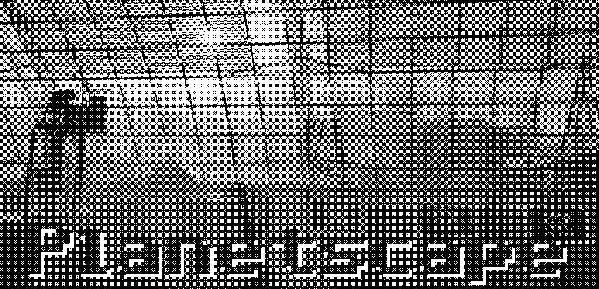
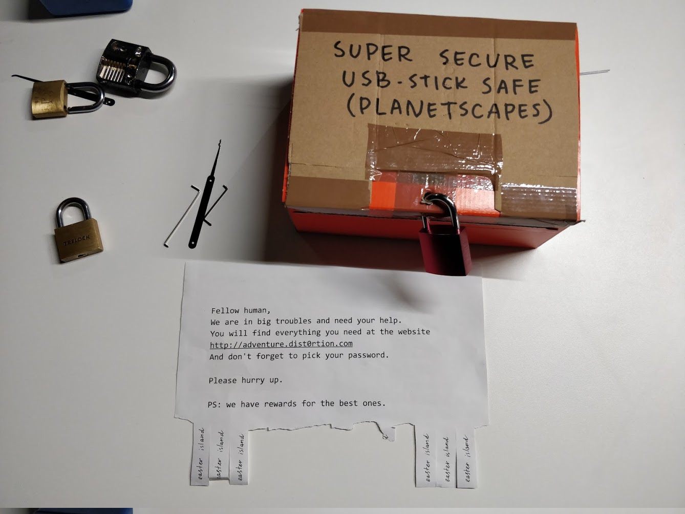
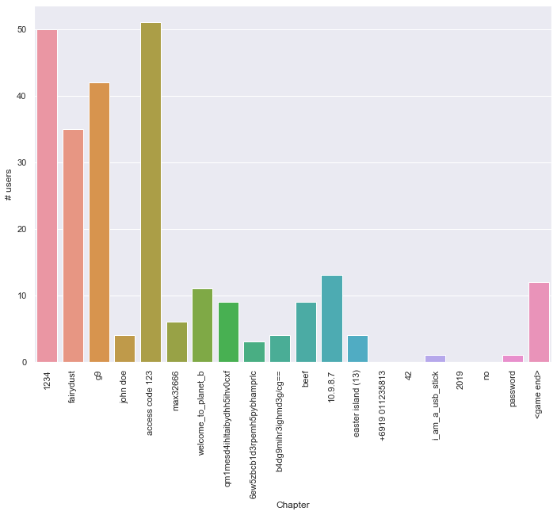
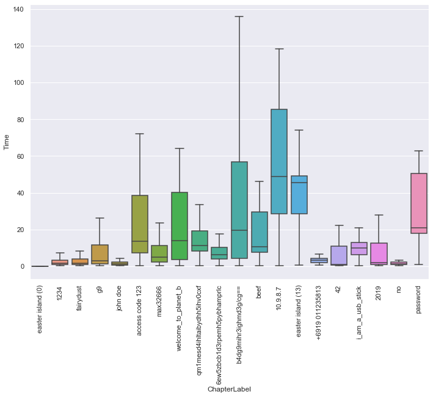

Planetscape, a dystopian escape game for 36C3

Introduction
We are Social Dist0rtion Protocol (SDP), a Decentralized Autonomous Organization from the future. We come from a time where transplanetary corporations commodified democracy, manipulated governments, and destroyed the environment, and there is nothing we can to to fix that. The only thing we have left is to travel back in time to convince humans to not repeat the same mistakes we did.
In this article we describe our third time-travel operation, codename Planetscape. Designed and developed on top of our learnings from our previous operations (Hunt Zuckerberg, December 2018; Planet A, August 2019), Planetscape is an escape game developed to raise awareness on the dreadful effects of climate change.
Game
On December 28th, 2019, Social Dist0rtion Protocol set up Planetscape, a game for the attendees of the 36th Chaos Communication Congress in Leipzig.
The game is open, free, and doesn’t require any registration: anyone with a smartphone or a laptop could instantly join the game at any time for the duration of the Congress.
The game starts by visiting the website https://adventure.dist0rtion.com/ (note: the game is closed now). By opening the website, the player has access to the first chapter of the game that contains both a piece of the background story and a hint on where to find the puzzle. If solved, the puzzle reveals the password to the next chapter. By submitting the password to the website, the player will get a new piece of the story and a new puzzle to solve, and so on until the end of the game.
Planetscape features twenty chapters of increasing difficulty. Like a classic escape game, both story and puzzles were integrated with the surrounding environment. The Leipzig Congress Center became a futuristic planetary base surrounded by a post apocalyptic desert. The Fairydust a time machine to activate. Puzzles required players to move around the assemblies at the Congress to find secret codes (geocaching), use the internal navigation map (c3nav) to discover specific places, find a specific WiFi access point to connect to the social network that gobbled up the free internet, lockpick a box to reveal the password, and many others.
Participants played the game in groups or individually. Two groups also merged to join forces to solve difficult puzzles. We didn’t enforce any rule regarding the size of the groups, we wanted people to have fun.
Still, Planetscape is a competitive game, and we handed out prizes on a first come first served basis. The teams that claimed their prize are:
The players’ feedback was heartwarming: “We were about to leave the congress but we found Planetscape, and we stayed longer to play!”, “Please make another escape game for the next congress!”, “This was the best thing of the congress”, “Highlight of this year” (ref), “We have no idea what you did but you have our support” (our parents).

Technology
Planetscape components are:
- A web dApp that players use to read the story, submit passwords, and check the leaderboard.
- A smart contract to store the structure of the story, validate players’ submissions, and read the leaderboard.
- Encrypted JSON documents stored in IPFS that contain the actual text of the chapters.
We pledged to create a user-friendly application that would rely on decentralized technology only. We want to live the decentralized dream with no compromises, developing a powerful dApp that would use Ethereum under the hood without exposing any details about blockchain and IPFS to the player. We committed to have instant onboarding by allowing people to play the game just by visiting a website.
We achieved that by leveraging our learnings from Hunt Zuckerberg and Planet A by using a “burner-wallet”-like approach (the player’s wallet is created on the fly when opening the dApp for the first time). In order to make transactions players needed Ether. Given that the game was played on the Rinkeby network, we set up a gas station that would simply transfer a small amount of Ether to new players.
Leveraging blockchain technology and IPFS give us many advantages:
- We don’t have to manage any servers.
- Each time a player finds a correct solution, a transaction is sent to the smart contract of the game. This allows us to easily create stats on the number of players and the difficulty of each level.
- The smart contract of the game maps each chapter to its IPFS content hash, once the game is set up there is no way for the game masters to cheat.
- (For the future) include other game masters to expand the main story or create sub-stories.
Introducing THC
In order to orchestrate all different components of the game, Social Dist0rtion Protocol (yes, still us) developed a game engine called Treasure Hunt Creator (THC for short) that, given a story structured in directories, is able to:
- Build and deploy the front-end application.
- Build, deploy and initialize the game smart contract on the Ethereum Network.
- Encrypt and deploy the chapters on IPFS.
THC played a crucial role in the creation of the game, allowing us to meet our high standards in terms of development experience. But THC was more than that. Fast prototyping and automatic deploying gave us the piece of mind we needed during our last hours of work.
Zero Knowledge Proof
As mentioned earlier, every time a correct password is found, a transaction is sent to the smart contract. Ethereum transactions are public and we don’t want players to sniff passwords submitted by others. To avoid that, we implemented a cheap zero-knowledge proof scheme. Roughly speaking, the scheme is the following:
- Given a valid
password, a player’splayer_address: - The dApp generates
seed = keccak256(password). - The dApp generates
chapter_private_keyfromseed. - The dApp generates
signature = sign(address, chapter_private_key) - The dApp calls the
submitmethod of the smart sontract passingsignature. - The smart contract checks the current
chapterforplayer_addressin its storage. - The smart contract loads the
chapter_addressforchapter. - The smart contracts calculates
signing_addressby doing anecrecover(player_address, signature). - If
signing_address == chapter_address, then the smart contract updates the current chapter for the player, moving them to the next chapter.
More information about the creation and verification of the proof can be found in the source code.
Marketing
Given the importance of operation Planetscape, we wanted to onboard as many people as possible. We are not acquainted with custom and traditions of the early 20001 (remember, we are from the future) so we tried three orthogonal strategies to engage with attendees of the Congress.
Personal Envelope
Before reaching the Congress we handcrafted 35 personal letters and embedded them in envelopes2. Each letter contained the text with the call to action to open the website, start the game, and enter the password for Chapter 0. Three SDP members carried them around the congress to personally onboard attendees of 36C3. Handing the envelope was not a trivial task and required interaction to assess the willingness of the prospect to participate to the game. Remember, we had a limited number of envelopes, so we had to play them carefully.
Flyer with Tear-Off Tabs
Before reaching the Congress we printed several flyers3 inviting attendees to visit the website of the game and start playing. The flyer had tear-off tabs containing the password to start the game4.
Another strategy was to use Twitter5. Right after starting the game we tweeted about it on our profile.
Results
Like we did for Hunt Zuckerberg, before starting the game we had some goals in mind in terms of:
- number of users that plays the game
- number of users that finishes the game
At the time of the first treasure hunt, we wanted to have at least 5 players (not including us) and at least 1 person finishing the game. We achieved the astounding result of 10 players (including 3 of us) and 3 players running for the final piece of the puzzle! Two of them are now honoured members of SDP (we love you Dina and Donald).
With Planetscape we then decided to set the bar higher: at least 100 players and 2 people finishing the game.
Our optimism was suggesting us to not expect anything more than 20 players, but given the aggressive marketing campaign and the complete lack of setup costs in order to start playing the game, we though 100 would have actually been a reasonable number.
Final results:
- 254 player (excluding us) joined the game and finished at least Chapter 0. You can check the list at the leaderboard.
- 3 players were running in parallel for the first price, it was really exciting to see that.
- Ultimately, 12 players finished the game.
- Some other players kept playing even after the CCC was over (somehow).
And now, some charts!
Funnel
This chart shows how many people ended their journey at any given Chapter. Let aside the initial chapters, it looks like chapter 5 was a tiny amount more complex than we thought. For who played, it was the one where the player needed to find a secret code around the Fairydust.

Difficulty
The following charts summarises the effective complexity of each chapter by means of the time (minutes) spent on it.
The boxes represent what 50% of the people did, the line in the middle is the median, the whiskers are the remaining top and bottom 25% of the players. Outliers have been omitted.

It seems like the most annoying chapter, for the players that got there, was the one involving the hunt of an access point at the congress. In fact, at some point, someone suddenly disconnected it and we found it out only an hour later. The general feedback was that that chapter was a pain in the ass.
What’s next
On a technical side, Social Dist0rtion Protocol will continue the development of THC:
- Enable easier customization and theming of the dApp.
- Reduce technical debt introduced by last minute changes.
- Improve the overall documentation.
- Improve the IPFS part as well: right now the dApp fetches the assets from the centralized infura IPFS gateway. By using js-ipfs we can overcome this limitation and have a purely decentralized approach. There is still no known solution to avoid using centralized JSONRPC like infura.
Given the feedback received, Social Dist0rtion Protocol is committed to repeat this operation for other events by creating more engaging stories and puzzles.
Stay up to date!
Subscribe to our Newsletter, we will send you occasional updates about what we are doing. And don’t worry we won’t spam, we are too lazy for that.
Footnotes from the Future
1: Custom and traditions of humans of the early 2000 are not very well known in the year 2111. Most of the evidence and documents have been destroyed in The Great DataCenter Meltdown™ dated 2051. Billions and billions and billions of relevant documents like Instagram selfies, Tiktok videos, Medium posts, memes, and tweets had been lost forever in this tragic event. That year is also remembered as The Influence Extinction, where millions of influencers had to quit social media and find a real job.↑
2: Textbooks report that humans, especially Teutons, really loved to read text printed on rectangular paper with an aspect ratio of √2 (for simplicity we can call this format ISO 216 A4) folded in three parts and placed inside a container about 10% larger. Moreover, studies showed that the text usually contained a clear indication of the sender and the receiver. We’ve also noticed that by following the strict rules of that time, the text related to the receiver would nicely show in the tiny transparent window located on the side of the envelope. The advanced envelope self-seal flip-and-stick design allowed us to fold the flaps and create a permanent bond to protect the content from eavesdropping attacks. Take that Eve! ↑
3: Our research showed that flyers with “pull-tabs” or “tear-off tabs” were widely used by humans of the past to sell items, hopefully find lost objects and pets, promote courses to learn yoga, classes to learn the German language or play ukulele. Given the popularity of this methodology, we’ve decided to print some of those as well (always following the ISO 216 DIN A4 210×298mm format) and use the “pull-tab” or “tear-off tab” to allow humans to take the password to Chapter 0 with them.↑
4: It’s worth noticing that given our the lack of skills to typeset the text correctly in the “pull-tabs” or “tear-off tabs”, we’ve decided to manually write the password on each “pull-tab” or “tear-off tab”. Our members really went the extra mile to make this happen, thank you from Social Dist0rtion Protocol to all Social Dist0rtion Protocol members involved in this process! ↑
5: It’s important to note that Twitter was originally conceived as a social media platform where humans shared “tweets”: short messages that would usually trigger the so called “sheet storms”. We believe those “sheet storms” were long discussions about the most suitable paper size to use for a specific context (a wedding invitation, a letter to your grandmother telling her how much you love her, a post-card from an amusement park where giant terrifying rats dress with shirts but no trousers). After President Trump’s successfully started World War III via a tweet, Twitter decided to pivot to become the first platform to support only war declarations, hate speech, fake news, trolling, and baby yoda memes.↑